Appendix B. Example Problem using NI cDAQ Hardware and the NII DAQmx Interface
This appendix will demonstrate a example problem using real hardware on a simple beam structure. This example problem will use a simple cDAQ hardware. A NI cDAQ-9185 chassis is used with two NI-9232 acquisition modules and two NI-9260 output modules. Figure B-1 shows this hardware setup.
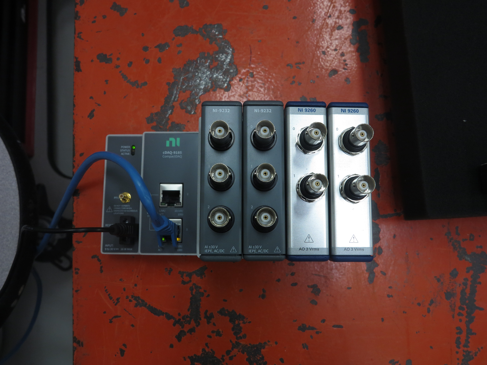
Figure B-1. NI cDAQ hardware used for this demonstration.
This example problem will start with a modal test using an impact hammer, then demonstrate a modal test with a shaker, and finally perform a MIMO Random and MIMO Transient test.
The beam being tested is 24 inches long by 1 inch high by 0.75 inches deep and made from steel. It is resting on soft foam to simulate a free-free boundary condition. We have six acquisition channels, so we will use four of those channels to measure response, and the other two to measure force and voltage signals as required by the testing configuration. Figure B-2 shows the beam, as well as a block with the coordinate axes labeled.
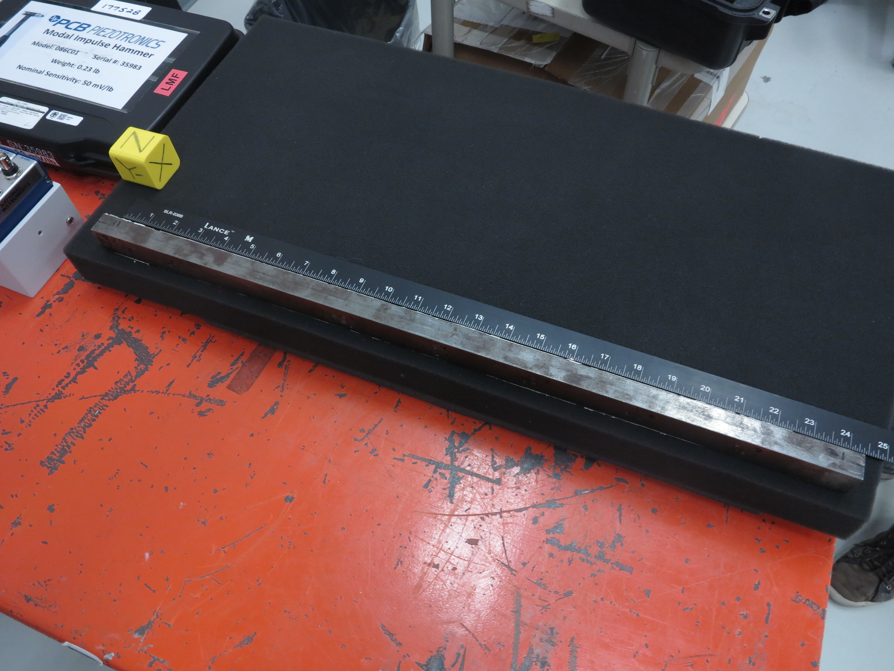
Figure B-2. Beam structure that will be tested in this example problem.
B.1. Modal Testing with an Impact Hammer
The first demonstration will be a simple impact test using a modal hammer. This will require no output from Rattlesnake.
B.1.1. Data Acquisition Setup
We will excite the beam in the thin direction, so we will place four uniaxial accelerometers on the beam at the 1, 12, 18, and 23 inch distances from the left end. We will name these locations 1, 12, 18, and 23, respectively.
As we install instrumentation, we will fill out a channel table. Rather than filling out the channel table in the GUI, we will load it from an Excel spreadsheet, which allows us to more easily save our work. We can get a template channel table to fill out by opening Rattlesnake and selecting the Modal Testing environment (Figure B-3).
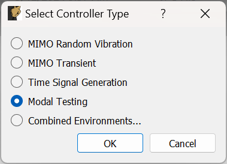
Figure B-3. Selecting the Modal Environment in Rattlesnake
We can then click the \inlineCode{Save Channel Table} button to save out the empty channel table to an Excel spreadsheet (Figure B-4).
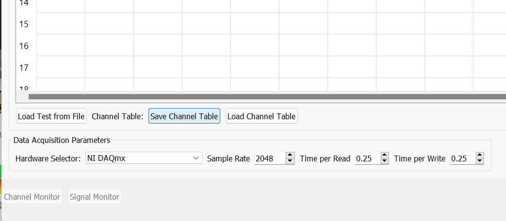
Figure B-4. Saving out an empty channel table to fill out for the test.
As we add instrumentation and plug it into our data acquisition system, we will record that information in the channel table. In order to tell Rattlesnake the correct device, we open NI Measurement and Automation Explorer (NI MAX). In the Devices and Interfaces section, we can see our network devices, which includes our cDAQ system and its associated modules (Figure B-5).
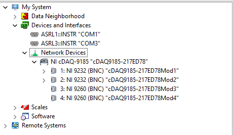
Figure B-5. NI MAX dialog showing the cDAQ devices.
Our acquisition channels will be plugged into devices \inlineCode{cDAQ9185-217ED78Mod1} and \inlineCode{cDAQ9185-217ED78Mod2} which have acquisition channels \inlineCode{ai0}, \inlineCode{ai1}, and \inlineCode{ai2}, and our output devices are \inlineCode{cDAQ9185-217ED78Mod3} and \inlineCode{cDAQ9185-217ED78Mod4} which have output channels \inlineCode{ao0} and \inlineCode{ao1}.
After we add our accelerometers, we will also add a channel for the modal hammer. Note that we will vary the hammer excitation location, so we will simply put in an arbitrary node number that we will override later. We will hit the beam on the surface opposite the side that the accelerometers are mounted on, so the direction of the impact is the identical to the directions of the accelerometers.
When we finish our channel table it looks like Figure B-6. Note that there is no output from Rattlesnake, so there are no entries in the Output Feedback in the channel table.
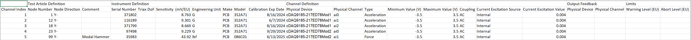
Figure B-6. Channel Table in Excel ready to load into Rattlesnake.
The test setup after attaching the accelerometers and plugging in the instrumentation is shown in Figure B-7.
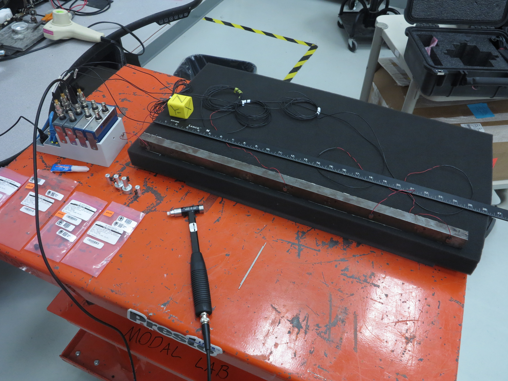
Figure B-7. Modal test setup using the impact hammer.
We can now load our channel table into Rattlesnake by clicking the Load Channel Table button shown in Figure B-8.
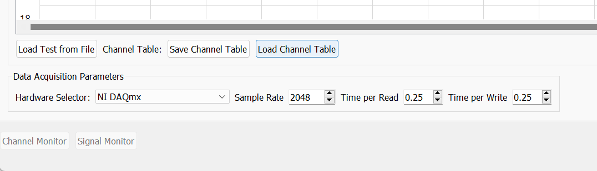
Figure B-8. Loading in the channel table for the test.
We should see that the information from the Excel spreadsheet is populated in the Rattlesnake GUI.
In the \inlineCode{Data Acquisition Parameter} section we will leave \inlineCode{NI DAQmx} selected. We will set the \inlineCode{Sample Rate} to \inlineCode{5120} Hz, as this is a valid output rate for both the cDAQ device types we are using. We can leave the \inlineCode{Time per Read} and \inlineCode{Time per Write} to their defaults. Figure B-9 shows the loaded channel table and data acquisition settings.
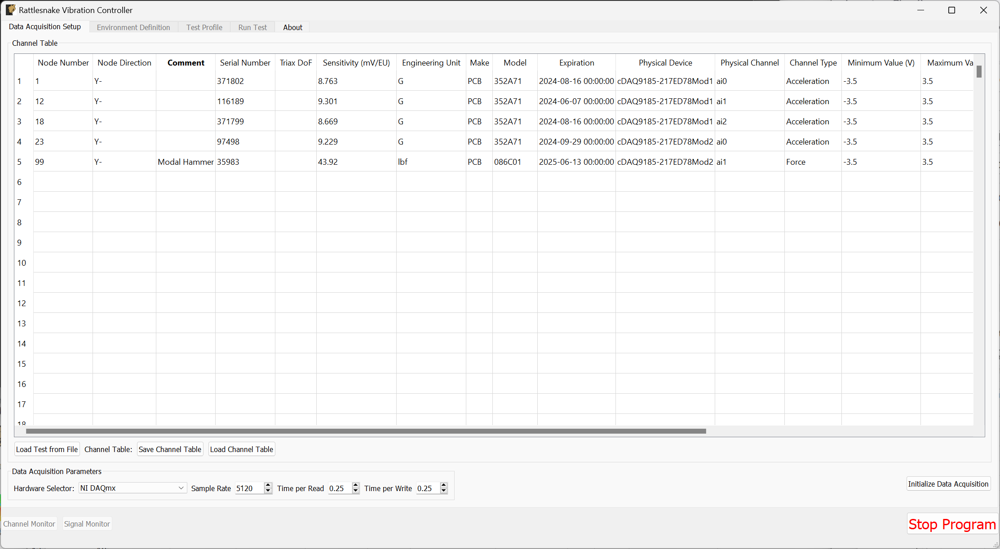
Figure B-9. Data acquisition settings for the Modal Test using an impact hammer.
At this point, we can click the \inlineCode{Initialize Data Acquisition} button shown in Figure B-10 to proceed to the next stage of the test.
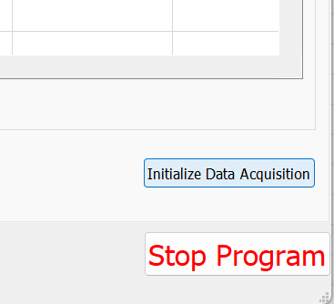
Figure B-10. Click the Initialize Data Acquisition button to proceed.
B.1.2. Environment Setup
At this point, we now need to set up our modal testing environment on the Environment Definition tab. As this is a simple beam, it will likely take a while to decay, so we will set up a 2 second measurement frame by setting the \inlineCode{Samples per Frame} to \inlineCode{10240}.
We will lower the \inlineCode{Number of Averages} to \inlineCode{5}.
For \inlineCode{Triggering}, we will set the \inlineCode{Triggering Type} to \inlineCode{Every Frame}, and set the \inlineCode{Acceptance} to \inlineCode{Manual}. We set the \inlineCode{Trigger Channel} to the Force channel with a \inlineCode{2%} \inlineCode{Pretrigger}. The \inlineCode{Trigger Level} we will set to \inlineCode{1%} and the \inlineCode{Hysteresis Level} to half of that value. Finally, we will set the \inlineCode{Hysteresis Frame %} to \inlineCode{50%}.
In the \inlineCode{Channel Selections} table, we will check the \inlineCode{Reference} column for the Force channel.
When all of these parameters are adjusted, we can click the \inlineCode{Initialize Environments} button to proceed. Figure B-11 shows the window with all settings set.
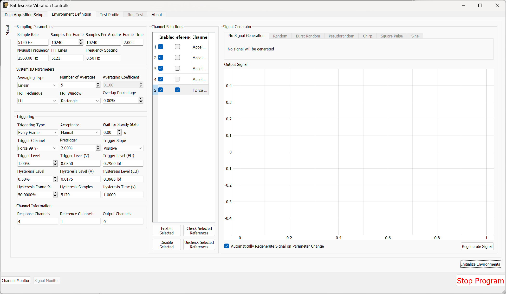
Figure B-11. Modal Test parameters for the impact test.
B.1.3. Test Profile
We will leave the \inlineCode{Test Profile} tab empty. Simply click the \inlineCode{Initialize Profile} button to proceed on this tab.
B.1.4. Run Test
We will save the standard modal data file from this test, so we won't worry about setting up streaming.
To enable the Modal Environment, first click the \inlineCode{Arm Data Acquisition} button. At this point, the modal environment buttons will become enabled, as shown in Figure B-12.
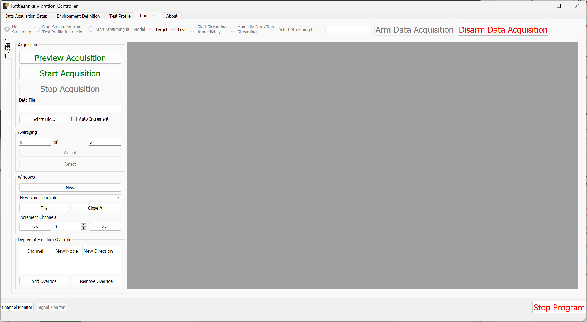
Figure B-12. Run Test tab with data acquisition armed
To start, we will use the \inlineCode{Degree of Freedom Override} section to choose our actual excitation location. This allows us to more quickly adjust the impact location than returning to the \inlineCode{Data Acquisition Setup} page and reinitializing everything in the channel table. Click the \inlineCode{Add Override} button, and in the row that appears, change the \inlineCode{Channel} column to the force channel. In the \inlineCode{New Node} column, put \inlineCode{23}, which will be the position we excite at. For the \inlineCode{New Direction}, put \inlineCode{Y-}. This is shown in Figure B-13.
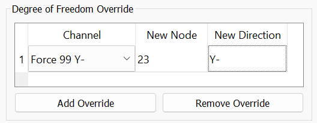
Figure B-13. Using the Degree of Freedom Override to adjust the impact location metadata.
Now with our channels correct, we can set up data display windows. We will use the \inlineCode{New from Template...} dropdown menu to create \inlineCode{Drive Point (Imaginary)}, \inlineCode{Drive Point Coherence}, and \inlineCode{Reference Autospectrum} channels. We will also manually create 5 windows by clicking the \inlineCode{New} button, and set them to visualize the time histories for each channel; these will help us determine if we need to change the trigger settings, frame length, or add a window. Clicking the \inlineCode{Tile} button will expand the windows to fill up the available space. Figure B-14 shows the result of these operations.
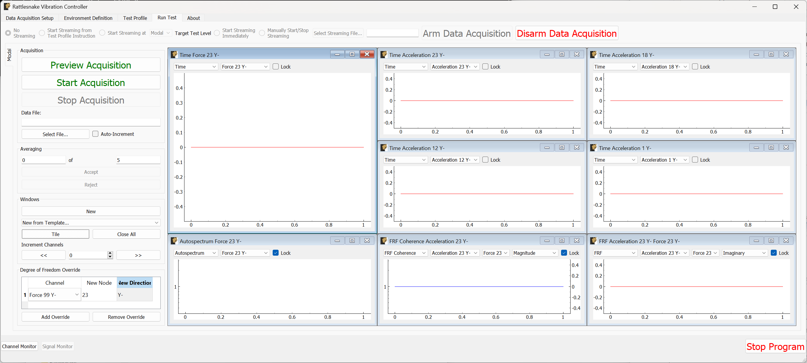
Figure B-14. Run Test tab with modal windows created.
We will first preview the measurement to ensure that all of the parameters we have selected are adequate. Click the \inlineCode{Preview Acquisition} button and impact the structure behind the 23Y- accelerometer. If the data acquisition triggers, data should appear in the windows as shown in Figure B-15.
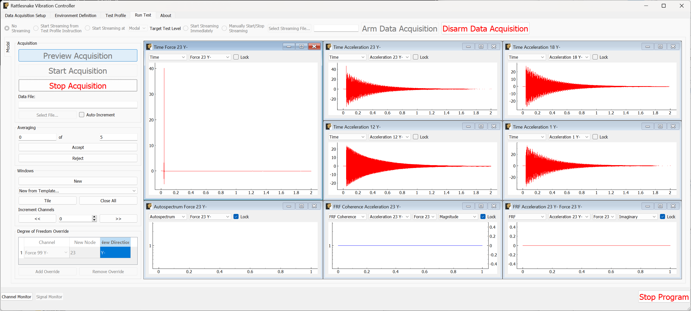
Figure B-15. Data acquisition triggered, waiting for acceptance or rejection of the measurement.
After the data appears, the \inlineCode{Accept} and \inlineCode{Reject} buttons should become active. If the signal decays within the window and the force looks reasonable, we can click \inlineCode{Accept} which will then proceed to the next measurement. After a measurement is accepted, averaged quantities such as coherence, frequency response functions, and autopower spectra will also be computed as shown in Figure B-16. Only Spectra (FFTs) and time histories can be visualized prior to accepting a measurement.
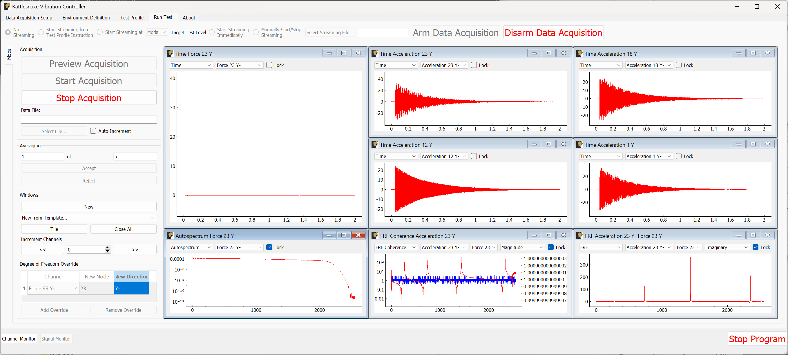
Figure B-16. Spectral quantities appear after acceptance.
After a handful of measurements are taken, we should be able to see the coherence and frequency response functions stabilize. We can evaluate the measurement by investigating the drive point FRF, coherence, reference autospectra, or any other quantities of interest. Figure B-17 shows these results.
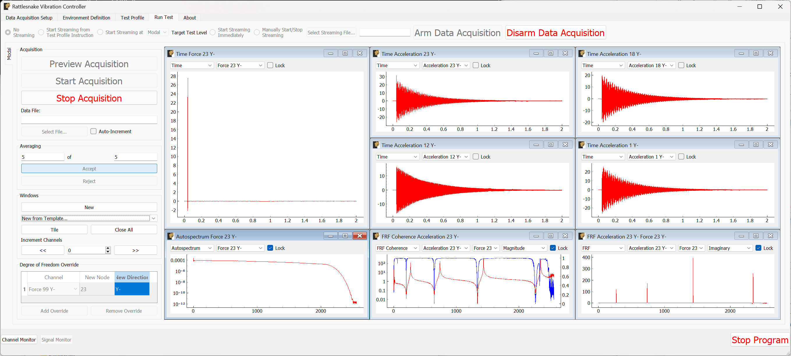
Figure B-17. Quantities of interest after 5 averages.
If this looks satisfactory, we can proceed with the measurement. Clicking the \inlineCode{Stop Acquisition} button will stop the preview, and allow us to start a real measurement. We must assign a \inlineCode{Data File} to save to by clicking the \inlineCode{Select File...} button. We will call our file \inlineCode{beam_hammer_impact.nc4}. To ensure we do not overwrite our data as we rove the hammer, we will click the \inlineCode{Auto-Increment} checkbox to automatically increment the filename. This is shown in Figure B-18.
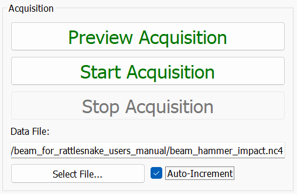
Figure B-18. Setting a file name for the modal data.
With the data file selected, we can click the \inlineCode{Start Acquisition} button. We perform the measurement identically to the preview case. When the specified number of averages have been acquired, the measurement will stop automatically as shown in Figure B-19
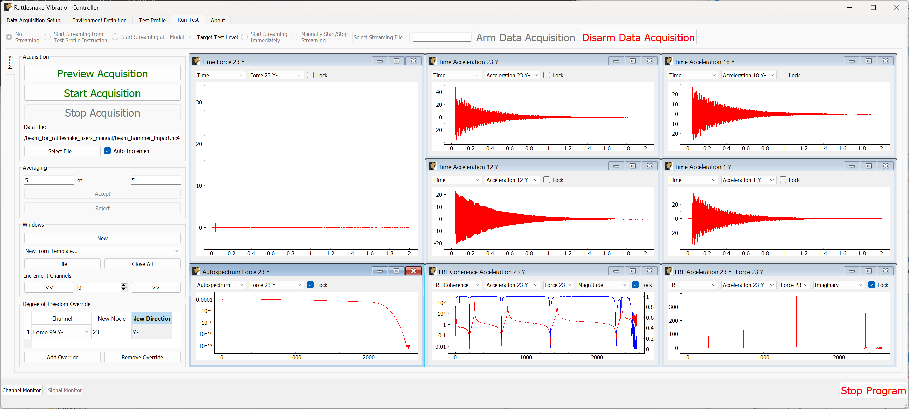
Figure B-19. Acquisition stops automatically after the desired number of impacts.
Now we will acquire the next measurement at node 18. We will update the \inlineCode{New Node} column of the \inlineCode{Degree of Freedom Override} table to be \inlineCode{18}. Note that this will also change the labels on the data windows. We will need to update the response channels on those windows to make sure we are still visualizing the drive point data, as shown in Figure B-20.
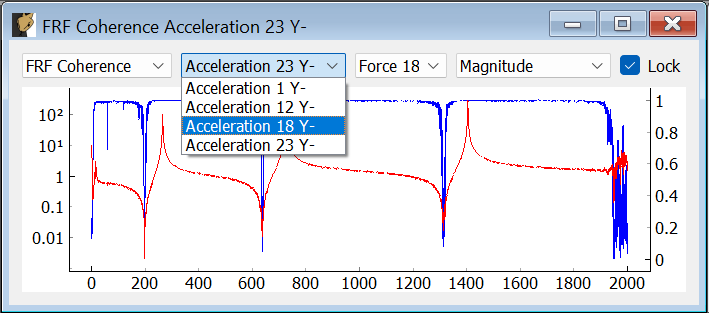
Figure B-20. Updating the signal being visualized in the data visualization window.
We can simply press the \inlineCode{Start Acquisition} button, and a new file will be created. After that measurment has been obtained, we will then repeat again, updating the \inlineCode{Degree of Freedom Override} table to node \inlineCode{12} and start a measurement exciting at that location.
When these measurements are complete, we can click \inlineCode{Disarm Data Acquisition} to stop the measurement, and close the Rattlesnake software.
B.1.5. Analyzing Modal Data
To analyze these data, we will use SDynPy, which is an open-source Python-based structural dynamics toolset. SDynPy can be installed via pip using \inlineCode{pip install sdynpy}, or otherwise downloaded from the Github repository. SDynPy is well-integrated with Rattlesnake, making it trivial to load in data from a Rattlesnake test.
For example, reading in a modal dataset with SDynPy looks like:
# Import SDynPy and Numpy
import sdynpy as sdpy
import numpy as np
# Read a rattlesnake file using `read_modal_data`
time_data, frfs, coherence, channel_table = sdpy.rattlesnake.read_modal_data(
'beam_hammer_impact_0000.nc4')\end{lstlisting}
We can plot the data easily using SDynPy's plotting functionality:
frfs.plot(one_axis=False,subplots_kwargs={'layout':'constrained'})
The results of this command are shown in Figure B-21.
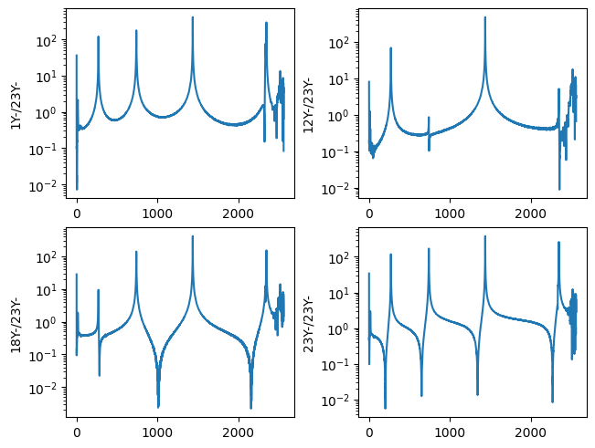
Figure B-21. Frequency response functions plotted in SDynPy from the modal impact test.
We can combine and plot the frequency response functions from our multiple datasets:
all_frfs = []
for i in range(3):
_, frfs, _, _ = sdpy.rattlesnake.read_modal_data('beam_hammer_impact_{:04}.nc4'.format(i))
all_frfs.append(frfs)
all_frfs = np.concatenate(all_frfs)
all_frfs.plot(one_axis=False,subplots_kwargs={'layout':'constrained','figsize':(10,6)})
The results of this command are shown in Figure B-22.
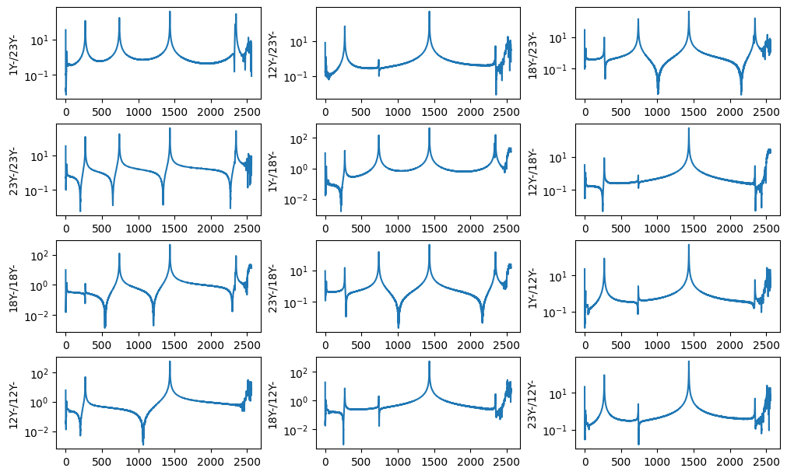
Figure B-22. All FRFs from the three impacts
Ideally we would like to plot mode shapes of this test, so as a first step towards that goal we will construct a test geometry. This contains nodes, coordinate systems, and optionally tracelines or elements. We can construct nodes with the ID numbers given in the test and coordinates specified by each node's position along the beam. Here we construct and print a \inlineCode{node_array} in SDynPy
nodes = sdpy.node_array(id = [1,12,18,23],
coordinate = [[1,0,0],
[12,0,0],
[18,0,0],
[23,0,0]])
print(nodes)
which has output
Index, ID, X, Y, Z, DefCS, DisCS
(0,), 1, 1.000, 0.000, 0.000, 1, 1
(1,), 12, 12.000, 0.000, 0.000, 1, 1
(2,), 18, 18.000, 0.000, 0.000, 1, 1
(3,), 23, 23.000, 0.000, 0.000, 1, 1
We will do similarly with a global coordinate system
css = sdpy.coordinate_system_array(id=1,name='global')
print(css)\end{lstlisting}
which has output
Index, ID, Name, Color, Type
(), 1, global, 1, Cartesian\end{lstlisting}
We can then construct a Geometry object. We will then add a traceline to connect the nodes together. We will then plot the geometry.
geometry = sdpy.Geometry(nodes,css)
geometry.add_traceline([1,12,18,23])
geometry.plot()\end{lstlisting}
The plotted geometry is shown in Figure B-23.
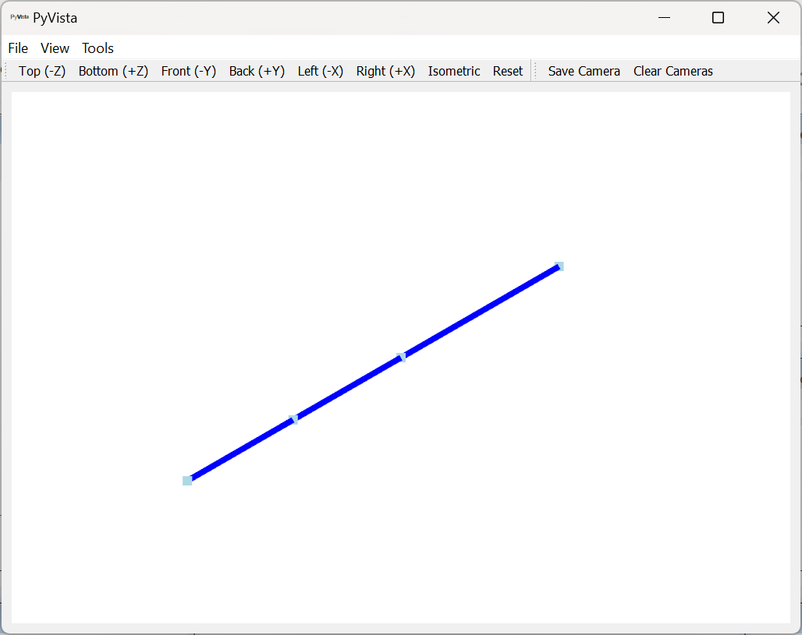
Figure B-23. Geometry used to plot mode shapes in the modal test.
Now that we have a geometry, we can fit modes and plot mode shapes. We will only fit up to approximately 2000 Hz, which is where the antialiasing filter of the cDAQ device is clearly active. We will use the \inlineCode{PolyPy_GUI} in SDynPy to do the mode fits. We can add our geometry directly to the fitter by assigning to the \inlineCode{geometry} attribute.
ppgui = sdpy.PolyPy_GUI(all_frfs)
ppgui.geometry = geometry\end{lstlisting}
We can select frequency ranges and polynomial orders to solve for, then click \inlineCode{Compute Stabilization} to proceed, as shown in Figure B-24.
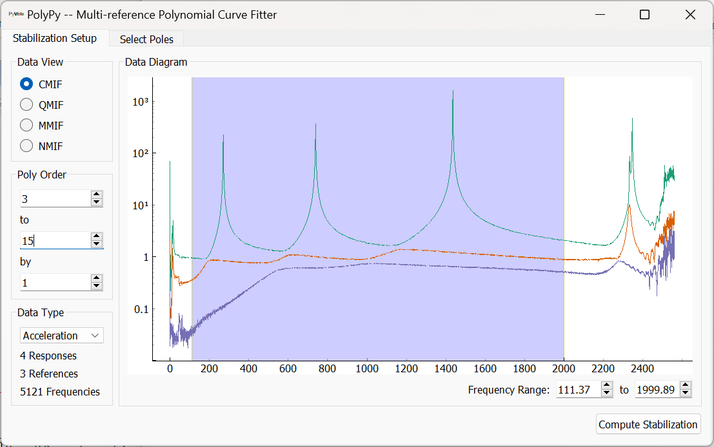
Figure B-24. Setting up frequency ranges and polynomial orders in PolyPy.
We can then select stable poles from the diagram and plot resynthesized FRFs or mode indicator functions. This operation and the results are shown in Figure B-25.
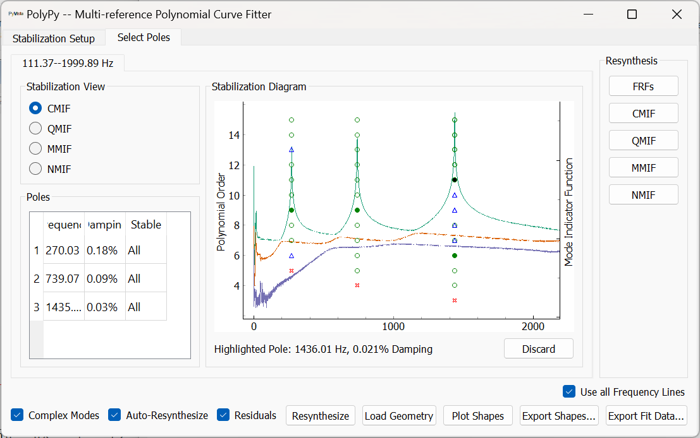
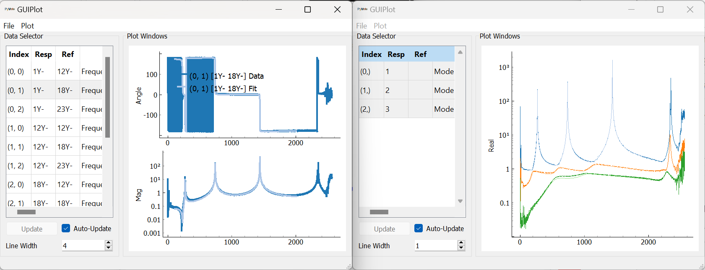
Figure B-25. Selecting stable poles and visualizing resynthesized FRFs.
We can then plot mode shapes from the test. Note that with only four sensors, our mode shapes will not be very highly resolved; however, they clearly correspond to the first three bending modes of the beam. The first mode shape is shown in Figure \ref{fig:examplecdaqmodalfits}.
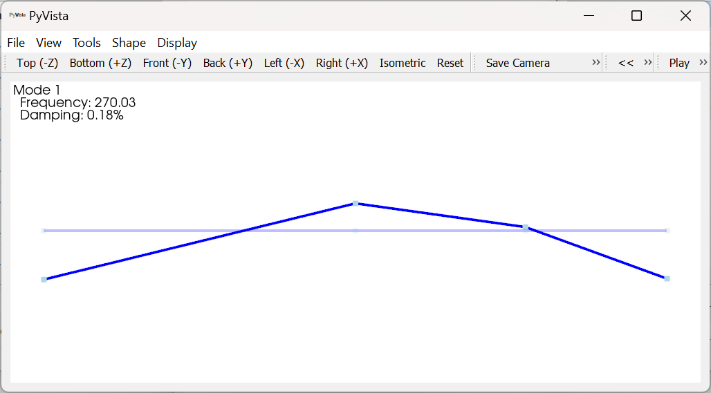
B-26. First mode shape fit to the modal data from the impact test.
B.2. Modal Testing with a Modal Shaker
Next we will demonstrate how to run a modal test with a shaker. A cap is placed over the accelerometer at node 1, and a force sensor is threaded into the cap. A receptacle is mounted to the force gauge to accept the shaker stinger.
B.2.1. Data Acquisition Settings
Recall that because Rattlesnake is required to measure the voltage associated with any drive signals it outputs, adding a shaker to a modal test requires two channels: one for the force sensor to measure the reference force, and one to measure the shaker voltage. Therefore, if we aim to measure the force for this test, we can only accommodate a single shaker input, as four of the six available channels channels are already taken by the accelerometers.
When we set up the shaker, we put a tee into the output channel from the data acquisition system, and we tee off the shaker drive signal into the last acquisition channel and to the shaker amplifier, as shown in Figure B-27. Figure B-28 shows a wider view with the modal shaker visible.
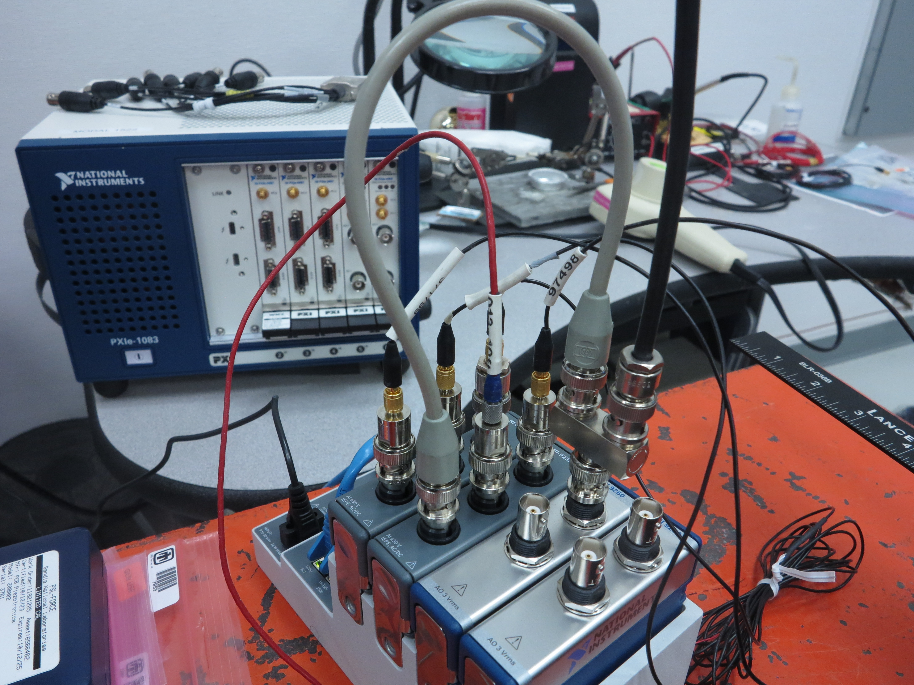
Figure B-27. Data acquisition setup for the shaker test showing the shaker signal teed into the last acquisition channel.
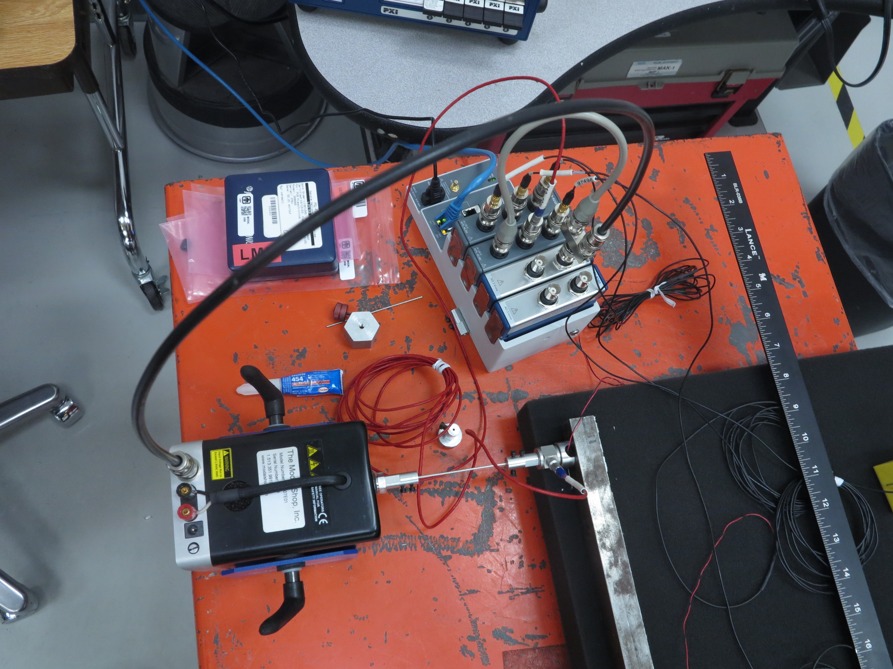
Figure B-28. Modal shaker setup for running a modal test.
As we fill out the channel table, we enter the physical device and channel that the shaker voltage is teed into in the \inlineCode{Channel Definition} section of the channel table, and enter the physical device and channel that the shaker voltage originates from in the \inlineCode{Output Feedback} section. In our case, the shaker signal comes from the \inlineCode{ao0} channel on the third module \inlineCode{cDAQ9185-217ED78Mod3}. The shaker signal is teed into acquisition channel \inlineCode{ai2} on the second module \inlineCode{cDAQ9185-217ED78Mod2}. We also enter the force sensor into the channel table. note that the direction associated with the force is now in the \inlineCode{Y+} direction, as the push direction of the shaker is opposite the measurement direction of the accelerometer that is covered by the cap. Figure B-29 shows the channel table set up in Excel.
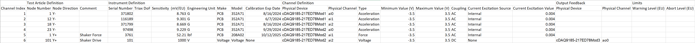
Figure B-29. Channel table set up for the modal shaker test.
Note that when assigning a node and direction to the voltage signal, you do not want to use the same values as for the drive point, otherwise Rattlesnake will not be able to determine which frequency response function is the drive point FRF. The author's practice is to use the same node number as the force sensor, but offset by some value (e.g. 100 in this case). In the case of multiple shakers, it will be clear which voltage corresponds to which shaker if such a convention is followed.
With the channel table set up, we can now start Rattlesnake and load the channel table. We will again select the Modal Testing environment, click the \inlineCode{Load Channel Table} button and load our file. We will again set the \inlineCode{Sample Rate} to \inlineCode{5120} Hz. With these parameters set, we can click the \inlineCode{Initialize Data Acquisition} button to proceed. Figure \ref{fig:examplecdaqmodalshakerdaqsettings} shows these settings in the Rattlesnake \ac{GUI}.
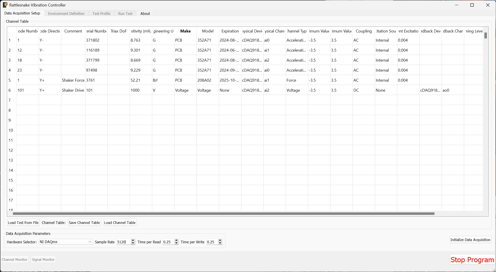
Figure B-30. Data acquisition settings for the Modal Shaker Test
B.2.2. Environment Definition for Pseudorandom Excitation
Now we set up the Modal Testing environment parameters. Because we only have one shaker, we can use the \inlineCode{Pseudorandom} excitation, so we will plan for that.
We will leave the \inlineCode{Samples per Frame} at its default value. We will change the \inlineCode{Number of Averages} to 10. We will leave \inlineCode{Triggering Type} set to \inlineCode{Free Run}, but we will add a delay of \inlineCode{5} in the \inlineCode{Wait for Steady State} box, to allow the system to come to steady state, as assumed by the Pseudorandom excitation.
In the \inlineCode{Channel Selections} box, we select the Force channel as the reference.
In the \inlineCode{Signal Generator} portion of the window, we select the \inlineCode{Pseudorandom} tab to set up a Pseudorandom signal. We can truncate the \inlineCode{Frequency Range} from \inlineCode{10 -- 2000} to remove the large rigid body motion that can occur at low frequency, as well as the portion of the excitation that is in the antialiasing filters of the system. We will set the \inlineCode{RMS} value to \inlineCode{0.1} V.
With these parameters set, we can click the \inlineCode{Initialize Environments} button to proceed. Figure B-31 shows these settings in the Rattlesnake \ac{GUI}.
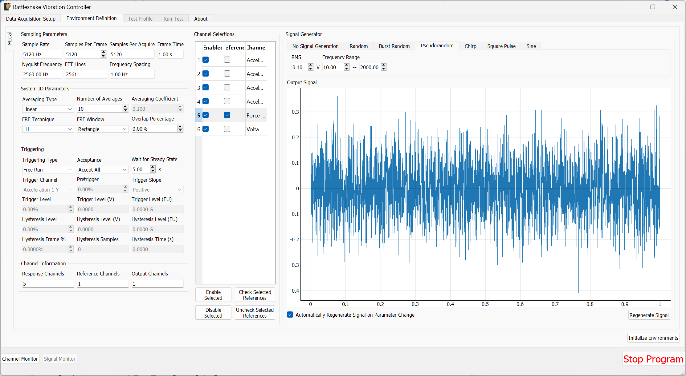
Figure B-31. Parameters set for the Pseudorandom shaker excitation.
B.2.3. Test Profile
We will leave the \inlineCode{Test Profile} tab empty. Simply click the \inlineCode{Initialize Profile} button to proceed on this tab.
B.2.4. Run Test
Arm Data Acquisition button for the first time. Once we Arm Data Acquisition, then we can unmute the shaker amplifier.
To run the test we can again \inlineCode{Arm Data Acquisition} to enable the modal controls. Because we will not be roving the shaker, we have entered the proper node number into the channel table, and therefore do not need to utilize the \inlineCode{Degree of Freedom Override} table. We will again display the standard diagnostics of drive point FRF and coherence, reference autospectra, and time response from all sensors and the voltage signal. This is shown in Figure B-32.
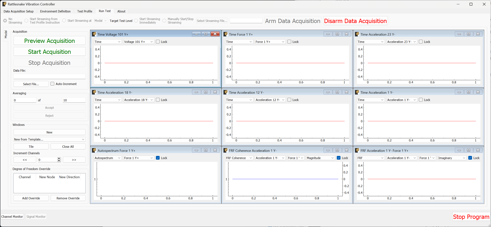
Figure B-32. Shaker testing with data acquisition armed and data visualization windows created.
We can then \inlineCode{Preview Acquisition} to see how the test parameters look. Data will take a few seconds to appear after the shaker starts due to the \inlineCode{Wait for Steady State} parameter that was set. Ideally if the pseudorandom excitation has reached steady state, we should see no appreciable difference between the time response of measurement frames, as the exact same signal is being applied and exact same responses are being measured. This is shown in Figure B-33.
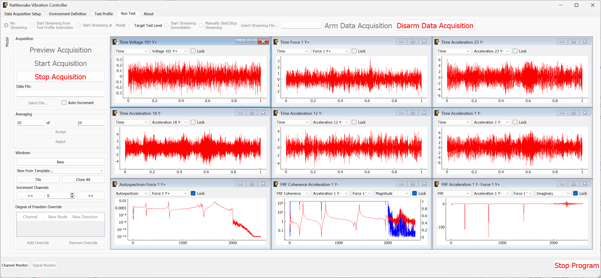
Figure B-33. Previewing the data acquisition with the pseudorandom excitation.
If we are happy with the preview, we can move to \inlineCode{Start Acquisition}. We define a file to save the data to called \inlineCode{beam_shaker_pseudorandom.nc4}. This is shown in Figure B-34. The measurement and shakers should stop automatically when the requested number of averages have been acquired.
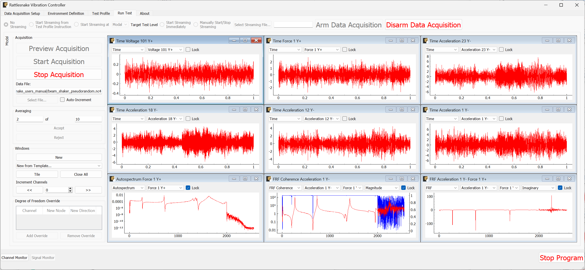
Figure B-33. Acquiring the pseudorandom modal data.
Once the test completes, we can mute our amplifier and Disarm Data Acquisition.
B.2.5. Other Shaker Excitation Types
We will return to the \inlineCode{Environment Definition} tab and set up a \inlineCode{Burst Random} test. We saw that the hammer ring-down took approximately 2 seconds, so we will set the \inlineCode{Samples Per Frame} value to \inlineCode{15360} to achieve a 3 second frame. We will set the \inlineCode{Number of Averages} to \inlineCode{30}. We will set the \inlineCode{Triggering Type} to \inlineCode{First Frame}, remove the \inlineCode{Wait for Steady State} value, and set the \inlineCode{Trigger Channel} to the voltage channel with a \inlineCode{Pretrigger} of \inlineCode{1%}. We will set the \inlineCode{Trigger Level} to \inlineCode{1%}, the \inlineCode{Hysteresis Level} to half that value, and the \inlineCode{Hysteresis Frame %} to \inlineCode{25%}.
In the \inlineCode{Signal Generator} section, we will select a \inlineCode{Burst Random} signal and set the \inlineCode{On Percentage} to \inlineCode{33%} to provide a 1 second burst and 2 second ring down. We will keep the other parameters the same as our previous Pseudorandom test.
Figure B-35 shows the parameters in the Rattlesnake \ac{GUI}. Click the \inlineCode{Initialize Environments} button to proceed, and return to the \inlineCode{Run Test} tab.
\begin{figure}[H]
\centering
\includegraphics[width=\linewidth]{figures/example_cdaq_burst_random_parameters}
\caption{Test parameters for the Burst Random excitation}
\label{fig:examplecdaqburstrandomparameters}
\end{figure}
![example_cdaq_burst_random_parameters](figures/example_cdaq_burst_random_parameters.png}
Figure B-35. Test parameters for the Burst Random excitation
We can preview the signal by clicking the \inlineCode{Preview Acquisition} button to ensure that the triggering has been set up correctly and the signals ring down appropriately. Figure B-36 shows the previewed data.
\begin{figure}[H]
\centering
\includegraphics[width=0.7\linewidth]{figures/example_cdaq_burst_random_preview}
\caption{Previewing the measurement with the initial parameter set.}
\label{fig:examplecdaqburstrandompreview}
\end{figure}
![example_cdaq_burst_random_preview](figures/example_cdaq_burst_random_preview.png}
Figure B-36. Previewing the measurement with the initial parameter set.
Apparently the shaker adds enough damping that the structure stops ringing by approximately 1/2 second after the burst finishes. Let's therefore \inlineCode{Stop Acquisition}, \inlineCode{Disarm Data Acquisition}, and return to the \inlineCode{Environment Definition} tab. We will update the \inlineCode{Samples Per Frame} value to \inlineCode{5120} to achieve a 1 second measurement frame. We will also change the burst \inlineCode{On Percentage} to \inlineCode{50%}.
Figure B-37 shows the updated parameters in the Rattlesnake \ac{GUI}. Click the \inlineCode{Initialize Environments} button to confirm these settings, and return to the \inlineCode{Run Test} tab.
\begin{figure}[H]
\centering
\includegraphics[width=\linewidth]{figures/example_cdaq_burst_random_parameters_v2}
\caption{Updated burst random parameters after previewing the initial guess at the parameters.}
\label{fig:examplecdaqburstrandomparametersv2}
\end{figure}
 and \inlineCode{Start Acquisition}. The acquisition should stop automatically when 30 averages are obtained. Figure B-39 shows the measurement midway through acquisition.
 time_data_br, frfs_br, coherence_br, channel_table_br = sdpy.rattlesnake.read_modal_data( 'beam_shaker_burst.nc4')
Compare to the impact
time_data_im, frfs_im, coherence_im, channel_table_im = sdpy.rattlesnake.read_modal_data( 'beam_hammer_impact_0000.nc4')\end{lstlisting}
We can use SDynPy to extract common degrees of freedom from each test and plot the FRFs for each.
\begin{lstlisting}[language=Python]
import matplotlib.pyplot as plt
ref_resp_dofs = sdpy.coordinate_array([1,23],'Y+') compare_frfs = [frfs_pr[ref_resp_dofs[::-1]][np.newaxis], frfs_br[ref_resp_dofs[::-1]][np.newaxis], frfs_im[ref_resp_dofs][np.newaxis]] fig,ax = plt.subplots(2) for frf in compare_frfs: frf.plot(ax) ax[-1].legend(['Psuedorandom','Burst','Hammer']) ax[-1].set_yscale('log')\end{lstlisting}
This gives the following plot:
\begin{figure}[H]
\centering
\includegraphics[width=0.5\linewidth]{figures/example_cdaq_modal_comparison}
\caption{Comparison of hammer impact testing compared to shaker excitation with two types of signals.}
\label{fig:examplecdaqmodalcomparison}
\end{figure}
We can note that the peaks are shifted slightly lower in frequency for the shaker testing, likely due to the small amount of mass loading of the shaker. Additionally, there appears to be some shaker-structure interactions going on near the third mode, but otherwise there is reasonably good agreement between the three tests.
\section{Running a Vibration Test with Rattlesnake}
Now we will demonstrate how we can run a controlled vibration test with Rattlesnake. We will demonstrate both Random and Transient vibration control in this section.
\subsection{Constructing Vibration Specifications}\label{sec:example_nidaqmx_spec}
Before we can run a test, we will first generate some environment data. This is the response that we will control to during the vibration testing. We will do this using the modal hammer to randomly impact the structure, and then we will try to get the shaker to control to that response.
To acquire environment data, we will simply run the modal environment in preview mode, but now use Rattlesnake's \inlineCode{Streaming} functionality to record time data, from which we will construct specifications for vibration testing.
We will disconnect the shaker from our test article. Then we return to the \inlineCode{Environment Definition} page and set the \inlineCode{Triggering Type} to \inlineCode{Free Run}.
On the \inlineCode{Run Test} tab, before selecting \inlineCode{Arm Data Acquisition} we select \inlineCode{Start Streaming Immediately} and \inlineCode{Select Streaming File...} to save a time history file called \inlineCode{environment_streaming.nc4}. This is shown in Figure \ref{fig:examplecdaqsetupstreaming}.
\begin{figure}[H]
\centering
\includegraphics[width=\linewidth]{figures/example_cdaq_set_up_streaming}
\caption{Run Test tab with Streaming enabled}
\label{fig:examplecdaqsetupstreaming}
\end{figure}
Now we can \inlineCode{Arm Data Acquisition} and then \inlineCode{Preview Acquisition}. Once the data acquisition is running, we will tap the structure with the modal hammer repeatedly along the length of the beam. Don't worry that the hammer is not plugged in, as we only care about the accelerometer response. Once we have recorded a few seconds of impacts, we can select \inlineCode{Stop Acquisition} and \inlineCode{Disarm Data Acquisition}. Note that the streaming file will not be available until the data acquisition is disarmed. We can now close Rattlesnake because we are done with the Modal environment.
We will now load the streaming file with SDynPy to create an environment.
\begin{lstlisting}[language=Python]
time_history, channel_table = sdpy.rattlesnake.read_rattlesnake_output( 'environment_streaming.nc4')\end{lstlisting}
We will extract just the first four acceleration channels for our environment, which are shown in Figure \ref{fig:examplecdaqspecificationsignal}
\begin{lstlisting}[language=Python]
accelerations = time_history[:4] accelerations.plot()\end{lstlisting}
\begin{figure}[H]
\centering
\includegraphics[width=0.5\linewidth]{figures/example_cdaq_specification_signal}
\caption{Measured acceleration data that we will turn into vibration specifications.}
\label{fig:examplecdaqspecificationsignal}
\end{figure}
Looking at the data, we can truncate it to just the time range of interest, shown in Figure \ref{fig:examplecdaqspecificationsignaltruncated}.
\begin{lstlisting}[language=Python]
truncated_accelerations = accelerations.extract_elements_by_abscissa(2.3,16.3) truncated_accelerations.plot()\end{lstlisting}
\begin{figure}[H]
\centering
\includegraphics[width=0.5\linewidth]{figures/example_cdaq_specification_signal_truncated}
\caption{Truncated acceleration data that we will turn into vibration specifications.}
\label{fig:examplecdaqspecificationsignaltruncated}
\end{figure}
To construct a random vibration environment, we will compute \ac{CPSD}s from this signal. While this isn't really an appropriate signal for a random vibration specification, it is good enough to demonstrate Rattlesnake's capabilities. Figure \ref{fig:examplecdaqcpsdspecification} shows the \ac{APSD}s, which are the diagonal entries of the \ac{CPSD} specification matrix.
\begin{lstlisting}[language=Python]
random_spec = truncated_accelerations.cpsd(samples_per_frame = 5120, overlap=0.5, window = 'hann')
Remove low frequency and antialiasing filters
random_spec = random_spec.extract_elements_by_abscissa(20,2000)
Scale it down so we don't break shakers trying to hit it
random_spec = random_spec / 100
ax = random_spec.plot_asds() fig = ax[0,0].figure fig.tight_layout()\end{lstlisting}
\begin{figure}[H]
\centering
\includegraphics[width=0.7\linewidth]{figures/example_cdaq_cpsd_specification}
\caption{Diagonal entries of the random vibration specification \ac{CPSD} matrix.}
\label{fig:examplecdaqcpsdspecification}
\end{figure}
We will also construct a transient specification that we will use to test the transient vibration control, shown in Figure \ref{fig:examplecdaqtransientspecification}.
\begin{lstlisting}[language=Python]
We will make it shorter and again scale it down to make it so we don't break anything
transient_spec = truncated_accelerations.extract_elements_by_abscissa(11.48,16.3) / 5 transient_spec.plot()\end{lstlisting}
\begin{figure}[H]
\centering
\includegraphics[width=0.7\linewidth]{figures/example_cdaq_transient_specification}
\caption{Transient specification used for vibration control.}
\label{fig:examplecdaqtransientspecification}
\end{figure}
We can now save these specifications to disk.
\begin{lstlisting}[language=Python]
random_spec.to_rattlesnake_specification('random_specification.npz') transient_spec.to_rattlesnake_specification('transient_specification.npz')\end{lstlisting}
\subsection{Setting up the Shakers and Channel Table}
We will now set up our vibration test. We add a second shaker to the other end of the beam using a second drive cap over the accelerometer at node 23, shown in Figure \ref{fig:examplecdaqtwoshakersetup}.
\begin{figure}[H]
\centering
\includegraphics[width=0.7\linewidth]{figures/example_cdaq_two_shaker_setup}
\caption{Vibration test setup showing two shakers attached to the test article.}
\label{fig:examplecdaqtwoshakersetup}
\end{figure}
Because we only have 6 acquisition channels, we must remove the force gauge to make room for the second shaker drive signal. We have now teed the first shaker's drive from \inlineCode{cDAQ9185-217ED78Mod3}'s \inlineCode{ao0} channel to the \inlineCode{ai1} channel of \inlineCode{cDAQ9185-217ED78Mod2}. The second shaker will be driven by \inlineCode{cDAQ9185-217ED78Mod3}'s \inlineCode{ao1} channel and is teed to the \inlineCode{ai2} channel of \inlineCode{cDAQ9185-217ED78Mod2}. This is shown in Figure \ref{fig:examplecdaqtwoshakerhardwaresetup}.
\begin{figure}[H]
\centering
\includegraphics[width=0.7\linewidth]{figures/example_cdaq_two_shaker_hardware_setup}
\caption{cDAQ hardware setup using two shakers.}
\label{fig:examplecdaqtwoshakerhardwaresetup}
\end{figure}
Our channel table now looks like Figure \ref{fig:examplecdaqtwoshakerchanneltable}.
\begin{figure}[H]
\centering
\includegraphics[width=\linewidth]{figures/example_cdaq_two_shaker_channel_table}
\caption{Channel table for the random vibration test setup}
\label{fig:examplecdaqtwoshakerchanneltable}
\end{figure}
\subsection{Setting up the Random Vibration Test}
Now that the test hardware and channel table are set up, we will set up our random vibration test. We will open Rattlesnake and select the \inlineCode{MIMO Random Vibration} environment as shown in Figure \ref{fig:examplecdaqmimorandomselection}.
\begin{figure}[H]
\centering
\includegraphics[width=0.5\linewidth]{figures/example_cdaq_mimo_random_selection}
\caption{Selecting the MIMO Random Vibration environment}
\label{fig:examplecdaqmimorandomselection}
\end{figure}
On the \inlineCode{Data Acquisition Setup} tab, we will \inlineCode{Load Channel Table} to import our Excel channel spreadsheet. We will also set the \inlineCode{Sample Rate} to \inlineCode{5120}. The other parameters can be left at their default values. Figure \ref{fig:examplecdaqvibrationdataacquisitionsetup} shows these parameters.
\begin{figure}[H]
\centering
\includegraphics[width=\linewidth]{figures/example_cdaq_vibration_data_acquisition_setup}
\caption{Data acquisition setup for the vibration tests.}
\label{fig:examplecdaqvibrationdataacquisitionsetup}
\end{figure}
Click the \inlineCode{Initialize Data Acquisition} button to proceed.
On the \inlineCode{Environment Definition} tab, we will keep the \inlineCode{Samples Per Frame} set to \inlineCode{5120}, which is consistent with the parameters used to construct the specification. In the \inlineCode{Control Python Script} section, we will click \inlineCode{Load} to select a control law. We will use the \inlineCode{control_laws.py} file, which is located in the \inlineCode{control_laws} folder of the main Rattlesnake directory. In the \inlineCode{Control Python Function} drop-down, we will select \inlineCode{pseudoinverse_control}.
In the \inlineCode{Control Channels} section, we will select all four acceleration channels, which we will use to control to the environment.
Finally we will click the \inlineCode{Load Spec} button and navigate to our random specification file \inlineCode{random_specification.npz} from SDynPy. The specification should then appear in the plots.
With these parameters selected, we can click the Initialize Environments button to proceed. Figure \ref{fig:examplecdaqrandomvibrationparameters} shows the parameters in the Rattlesnake \ac{GUI}.
\begin{figure}[H]
\centering
\includegraphics[width=\linewidth]{figures/example_cdaq_random_vibration_parameters}
\caption{Random vibration parameters specified in the Rattlesnake \ac{GUI}.}
\label{fig:examplecdaqrandomvibrationparameters}
\end{figure}
At this point, we must run the \inlineCode{System Identification} phase of the controller. We will set the Level to \inlineCode{0.1 V RMS}, then click \inlineCode{Start} to start the system identification. A noise floor check will first be run, then the system identification follows. Rattlesnake will determine the transfer functions between the two shaker drive signals and the four accelerometer channels. When the specified number of averages have been obtained, the System Identification will stop automatically. Figure \ref{fig:examplecdaqrandomvibrationsystemid} shows the system identification phase of the controller.
\begin{figure}[H]
\centering
\includegraphics[width=\linewidth]{figures/example_cdaq_random_vibration_system_id}
\caption{System identification for the Random Vibration environment.}
\label{fig:examplecdaqrandomvibrationsystemid}
\end{figure}
On the \inlineCode{Test Prediction} tab, Rattlesnake will make predictions of the voltage that it will need to output to achieve the control specified, as well as the responses predicted to be obtained. Here it is important to note that the output signals are not too large for the shakers. Figure \ref{fig:examplecdaqrandomvibrationpredictions} shows the predictions for this test.
\begin{figure}[H]
\centering
\includegraphics[width=\linewidth]{figures/example_cdaq_random_vibration_predictions}
\caption{Test predictions for the random vibration environment}
\label{fig:examplecdaqrandomvibrationpredictions}
\end{figure}
If the predictions look good, we can proceed to the Test Profile tab, which we will again leave blank and click the Initialize Test Profile button to proceed to the Run Test tab.
\subsection{Running a Random Vibration Test}
On the \inlineCode{Run Test} tab, we see a different interface than the one we saw for the modal test. We can click the \inlineCode{Arm Data Acquisition} button to enable the Random environment.
To start, we will set the \inlineCode{Current Test Level} to \inlineCode{-12} dB to ensure when we start the test we don't break anything. We will then step up slowly to the full \inlineCode{0} dB level test.
We can then click the \inlineCode{Start Environment} button to start the test. Figure \ref{fig:examplecdaqrandomvibrationstart} shows the \ac{GUI} prior to starting the test with the test level turned down to -12 dB.
\begin{figure}[H]
\centering
\includegraphics[width=\linewidth]{figures/example_cdaq_random_vibration_start}
\caption{Ready to start a random vibration test in Rattlesnake}
\label{fig:examplecdaqrandomvibrationstart}
\end{figure}
As the test is running, the main Rattlesnake interface will show the sum of \ac{APSD}s, which is the trace of the \ac{CPSD} matrix and can be thought of as an average response of the test (Figure \ref{fig:examplecdaqrandomvibrationsumasds}). To visualize individual channels, windows can be created in the \inlineCode{Data Display} section of the window (figure \ref{fig:examplecdaqrandomvibrationindividualchannels}).
\begin{figure}[H]
\centering
\includegraphics[width=\linewidth]{figures/example_cdaq_random_vibration_sum_asds}
\caption{Rattlesnake \ac{GUI} showing the average test response}
\label{fig:examplecdaqrandomvibrationsumasds}
\end{figure}
\begin{figure}[H]
\centering
\includegraphics[width=\linewidth]{figures/example_cdaq_random_vibration_individual_channels}
\caption{Individual channel \ac{APSD}s showing how well each channel is matching the test level.}
\label{fig:examplecdaqrandomvibrationindividualchannels}
\end{figure}
If the controller is controlling sufficiently well, we can step up the level to \inlineCode{0} dB as shown in Figure \ref{fig:examplecdaqrandomvibrationsumasdsfulllevel}.
\begin{figure}
\centering
\includegraphics[width=\linewidth]{figures/example_cdaq_random_vibration_sum_asds_full_level}
\caption{Vibration control at full specification level.}
\label{fig:examplecdaqrandomvibrationsumasdsfulllevel}
\end{figure}
Feel free to investigate other control laws in the \inlineCode{control_laws.py} file, as they can result in a better control than the standard pseudoinverse control. Figure \ref{fig:examplecdaqrandomvibrationsumasdsmatchtrace} shows the results using the \inlineCode{match_trace_pseudoinverse} approach. In particular, we see the regions between the peaks improve in this case.
\begin{figure}[H]
\centering
\includegraphics[width=\linewidth]{figures/example_cdaq_random_vibration_sum_asds_match_trace}
\caption{Improved control using a closed loop control law found in \inlineCode{match_trace_pseudoinverse}.}
\label{fig:examplecdaqrandomvibrationsumasdsmatchtrace}
\end{figure}
Clearly, Rattlesnake has obtained relatively good control for this test.
To save data from the test, we can either stream time data using the same approach used previously, or we can simply use the \inlineCode{Save Current Spectral Data} to save out the current realizations of the control \ac{CPSD}s, which we will call \inlineCode{random_vibration_spectral_results.nc4}. This is the quickest way to do comparisons between the specification and the control achieved. We can load this file with SDynPy and use SDynPy to make comparisons between the test and specification. The results are shown in Figure \ref{fig:examplecdaqrandomvibrationerrorsummary}.
\begin{lstlisting}[language=Python]
control, spec, drives = sdpy.rattlesnake.read_random_spectral_data( 'random_vibration_spectral_results.nc4') spec = spec.extract_elements_by_abscissa(20,2000) control = control.extract_elements_by_abscissa(20,2000) spec.error_summary(figure_kwargs={'figsize':(10,6)},Control=control)\end{lstlisting}
\begin{figure}[H]
\centering
\includegraphics[width=0.7\linewidth]{figures/example_cdaq_random_vibration_error_summary}
\caption{Error summary between the test and specification for the random vibration control.}
\label{fig:examplecdaqrandomvibrationerrorsummary}
\end{figure}
We can then \inlineCode{Stop Environment}, \inlineCode{Disarm Data Acquisition} and close the software.
\subsection{Setting up the Transient Vibration Test}
The last demonstration will show how we can perform a MIMO Transient environment test. Open Rattlesnake and select the \inlineCode{MIMO Transient} environment as shown in Figure \ref{fig:examplecdaqmimotransientselection}.
\begin{figure}[H]
\centering
\includegraphics[width=0.5\linewidth]{figures/example_cdaq_mimo_transient_selection}
\caption{Selecting the \ac{MIMO} Transient environment}
\label{fig:examplecdaqmimotransientselection}
\end{figure}
We will set the \inlineCode{Data Acquisition Setup} tab identical to what was used before, as shown in Figure \ref{fig:examplecdaqvibrationdataacquisitionsetup}. Click the \inlineCode{Initialize Data Acquisition} button to proceed.
On the \inlineCode{Environment Definition tab}, we will again \inlineCode{Load} a control law file. This time we will load the \inlineCode{transient_control_laws.py} file, which contains transient control laws for Rattlesnake. We will select the \inlineCode{pseudoinverse_control} function.
In the \inlineCode{Control Channels} section, we will again select all four accelerometer channels as the control channels.
Finally, we will select the \inlineCode{Load Signal} button to load in our specification file \inlineCode{transient_specification.npz}. Figure \ref{fig:examplecdaqtransientparameters} shows these parameters set in the Rattlesnake \ac{GUI}. With these parameters set, we will click the \inlineCode{Initialize Environments} button to proceed.
\begin{figure}[H]
\centering
\includegraphics[width=\linewidth]{figures/example_cdaq_transient_parameters}
\caption{Parameters set for the Transient environment in the Rattlesnake \ac{GUI}.}
\label{fig:examplecdaqtransientparameters}
\end{figure}
The Transient environment will also need to perform a \inlineCode{System Identification}. Again set the \inlineCode{Level} to \inlineCode{0.1 V RMS} and click \inlineCode{Start} to start the noise floor and system identification. Here it may be useful to look at the \inlineCode{Impulse Response}, as that is useful to understand how transient control will be performed. This is shown in Figure \ref{fig:examplecdaqtransientsystemid}.
\begin{figure}[H]
\centering
\includegraphics[width=\linewidth]{figures/example_cdaq_transient_system_id}
\caption{System Identification for the Transient environment with Impulse Response function shown.}
\label{fig:examplecdaqtransientsystemid}
\end{figure}
Once the system identification has been performed, Rattlesnake will again make a prediction as to the results of the test and show it on the \inlineCode{Test Predictions} tab. It will show the peak voltage it aims to output, as well as the response it predicts that it will get compared to the desired response. Figure \ref{fig:examplecdaqtransientpredictions} shows these predictions.
\begin{figure}[H]
\centering
\includegraphics[width=\linewidth]{figures/example_cdaq_transient_predictions}
\caption{Test predictions and voltage that will be output for the transient control.}
\label{fig:examplecdaqtransientpredictions}
\end{figure}
We can then proceed to the \inlineCode{Test Profile} tab, click the \inlineCode{Initialize Profile} button, and we are ready to run the test.
\subsection{Running a Transient Test}
We can now click the \inlineCode{Arm Data Acquisition} button to enable the Transient control functionality. We can set the \inlineCode{Signal Level} to \inlineCode{-12} dB to start so we don't break anything when we run. If it runs successfully, then we can step back up to full level.
Rattlesnake will identify the control signal as it comes through the data acquisition and surround it with a box, as shown in Figure \ref{fig:examplecdaqtransientcontrolresults}.
\begin{figure}[H]
\centering
\includegraphics[width=\linewidth]{figures/example_cdaq_transient_control_results}
\caption{Running the transient control with the control signal identified.}
\label{fig:examplecdaqtransientcontrolresults}
\end{figure}
To visualize individual channels, new windows can be created in the \inlineCode{Data Display} portion of the window. The four control channels can be seen in Figure \ref{fig:examplecdaqtransientcontrolchannels}
\begin{figure}[H]
\centering
\includegraphics[width=\linewidth]{figures/example_cdaq_transient_control_channels}
\caption{Control achieved on each control channel in the Transient vibration test.}
\label{fig:examplecdaqtransientcontrolchannels}
\end{figure}
To save out data, we can click the \inlineCode{Save Current Control Data} button. We will save the data to the file \inlineCode{transient_vibration_control_results.nc4}. This can be loaded into SDynPy to do comparisons to the desired signal. It can be useful to zoom in to the starts of each impulse to see that while the ring down does match quite well, the initial impulse cannot be achieved as well with the modal shakers as it was with the impact hammer. These results are shown in Figure \ref{fig:examplecdaqtransientzoom}.
\begin{lstlisting}[language=Python]
control, specification, drives = sdpy.rattlesnake.read_transient_control_data( 'transient_vibration_control_results.nc4')
ax = specification.plot( one_axis=False, plot_kwargs = {'linewidth':0.5}, subplots_kwargs = {'figsize':(10,6),'sharex':True,'sharey':True}) for a,c in zip(ax.flatten(),control): c.plot(a,plot_kwargs = {'linewidth':0.5})
Zoom in on a specific portion
a.set_xlim(0.45,0.55)\end{lstlisting}
\begin{figure}[H]
\centering
\includegraphics[width=0.7\linewidth]{figures/example_cdaq_transient_zoom}
\caption{Zoom into an impact during the transient control showing good results achieved after the impact.}
\label{fig:examplecdaqtransientzoom}
\end{figure}
\section{Summary}
This appendix has walked through several example tests using real hardware with Rattlesnake. Users are encouraged to use this appendix as a quick-start guide to using Rattlesnake. A relatively inexpensive NI cDAQ device was used to perform modal and vibration testing on a simple beam structure with minimal instrumentation.
Modal testing was performed using both hammer impacts and shaker excitation. Modes were fit to the data using the SDynPy Python package.
Vibration testing was performed using modal shakers. An impact hammer was used to create an environment that the vibration test would aim to replicate. Both \ac{MIMO} Random and \ac{MIMO} transient vibration tests were run, where the \ac{MIMO} Random attempted replicate a prescribed \ac{CPSD} matrix, and the \ac{MIMO} Transient attempted to replicate the time history directly. Both control schemes achieved good results.